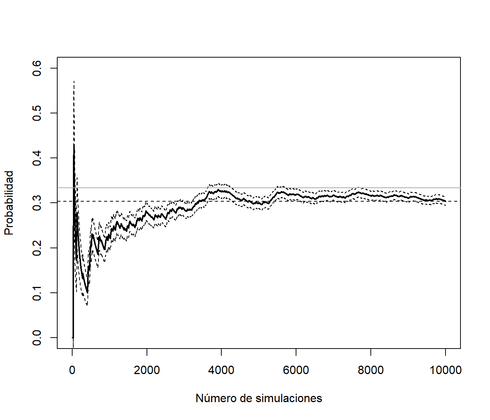
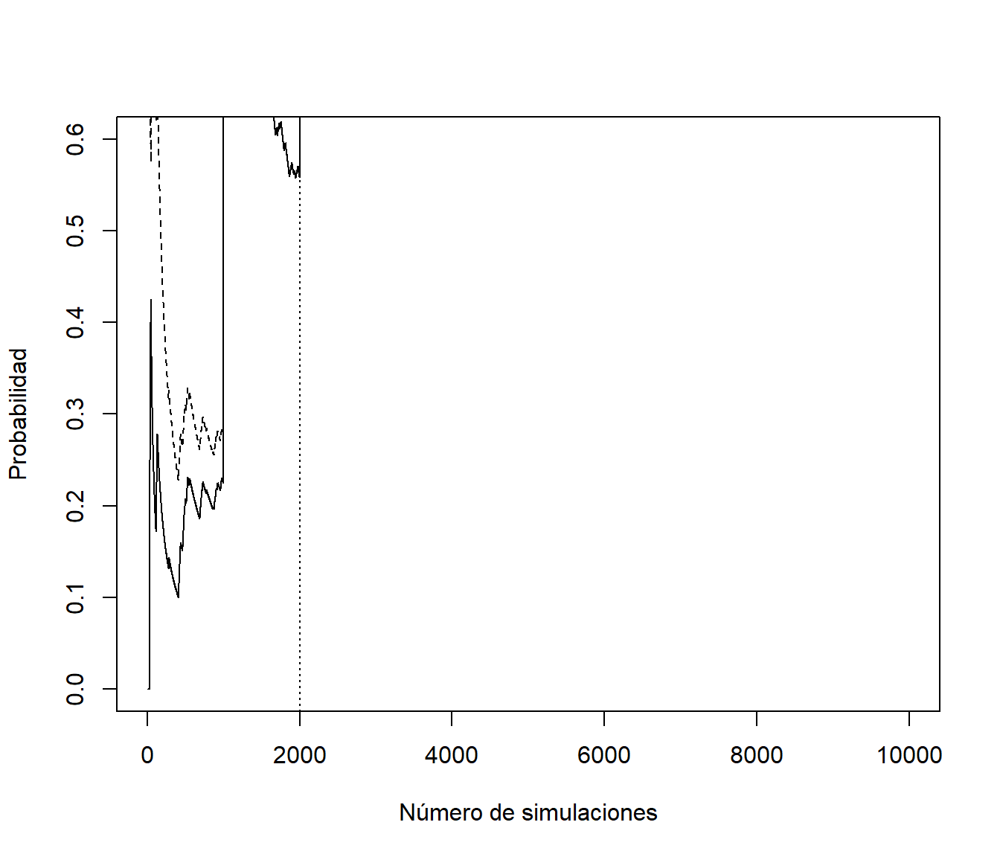
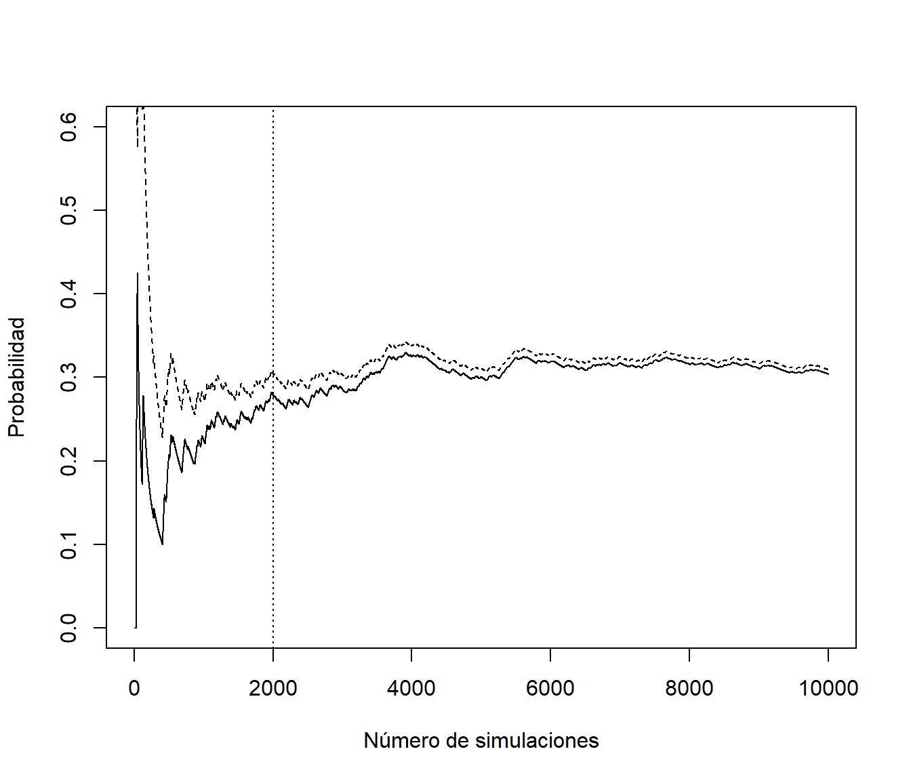
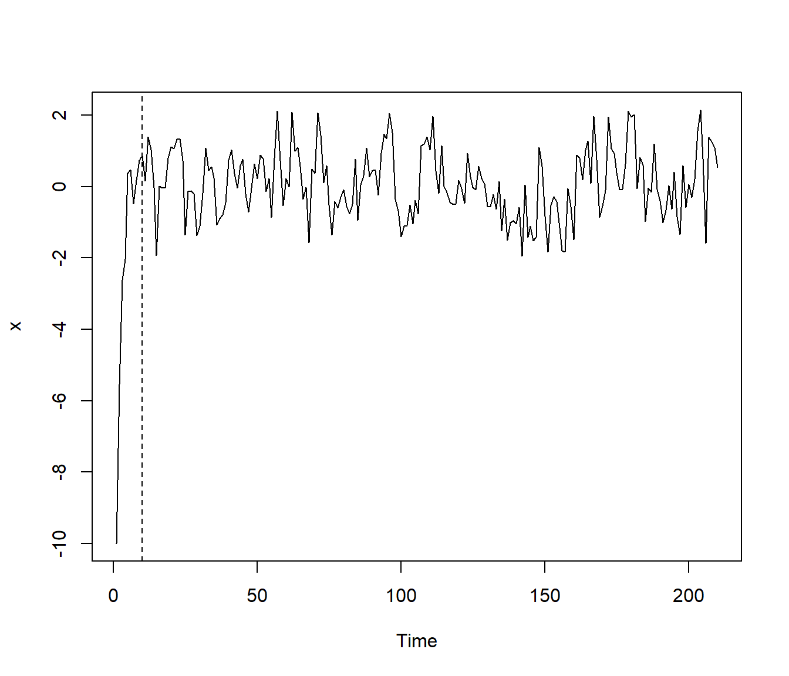

4.5 El problema de la dependencia
En el caso de dependencia, la estimación de la precisión se complica: \[Var\left( \overline{X}\right) =\frac{1}{n^{2}}\left( \sum_{i=1}^{n}Var\left( X_{i} \right) + 2\sum_{i<j}Cov\left( X_{i},X_{j}\right) \right).\]
Supongamos que en A Coruña llueve de media 1/3 días al año, y que la probabilidad de que un día llueva solo depende de lo que ocurrió el día anterior, siendo 0.94 si el día anterior llovió y 0.03 si no. Podemos generar valores de la variable indicadora de día lluvioso con el siguiente código:
# Variable dicotómica 0/1 (FALSE/TRUE)
set.seed(1)
nsim <- 10000
alpha <- 0.03 # prob de cambio si seco
beta <- 0.06 # prob de cambio si lluvia
rx <- logical(nsim) # x == "llueve"
rx[1] <- FALSE # El primer día no llueve
for (i in 2:nsim)
rx[i] <- if (rx[i-1]) runif(1) > beta else runif(1) < alphaSe podría pensar en emplear las expresiones anteriores:
n <- 1:nsim
est <- cumsum(rx)/n
esterr <- sqrt(est*(1-est)/(n-1)) # OJO! Supone independencia
plot(est, type="l", lwd=2, ylab="Probabilidad",
xlab="Número de simulaciones", ylim=c(0,0.6))
abline(h = est[nsim], lty=2)
lines(est + 2*esterr, lty=2)
lines(est - 2*esterr, lty=2)
abline(h = 1/3, col="darkgray") # Prob. teor. cadenas Markov
La aproximación de la proporción sería correcta (es consistente):
## [1] 0.3038Sin embargo, al ser datos dependientes esta aproximación del error estandar no es adecuada:
## [1] 0.004599203En este caso al haber dependencia positiva se produce una subestimación del verdadero error estandar.

El gráfico de autocorrelaciones sugiere que si tomamos 1 de cada 25 podemos suponer independencia.

n <- 1:length(rxi)
est <- cumsum(rxi)/n
esterr <- sqrt(est*(1-est)/(n-1))
plot(est, type="l", lwd=2, ylab="Probabilidad",
xlab=paste("Número de simulaciones /", lag + 1), ylim=c(0,0.6))
abline(h = est[length(rxi)], lty=2)
lines(est + 2*esterr, lty=2) # Supone independencia
lines(est - 2*esterr, lty=2)
abline(h = 1/3, col="darkgray") # Prob. teor. cadenas Markov
Esta forma de proceder podría ser adecuada para tratar de aproximar la precisión pero no sería eficiente para aproximar la media. Siempre será preferible emplear todas las observaciones.
Por ejemplo, se podría pensar en considerar las medias de grupos de 24 valores consecutivos y suponer que hay independencia entre ellas:
rxm <- rowMeans(matrix(rx, ncol = lag, byrow = TRUE))
n <- 1:length(rxm)
est <- cumsum(rxm)/n
esterr <- sqrt(cumsum((rxm-est)^2))/(n - 1) # Error estándar
plot(est, type="l", lwd=2, ylab="Probabilidad",
xlab=paste("Número de simulaciones /", lag + 1), ylim=c(0,0.6))
abline(h = est[length(rxm)], lty=2)
lines(est + 2*esterr, lty=2) # OJO! Supone independencia
lines(est - 2*esterr, lty=2)
abline(h = 1/3, col="darkgray") # Prob. teor. cadenas Markov
Esta es la idea del método de medias por lotes (batch means; macro-micro replicaciones) para la estimación de la varianza. Alternativamente se podría recurrir a la generación de múltiples secuencias independientes.
Trataremos este tipo de problemas en la diagnosis de algoritmos de simulación Monte Carlo de Cadenas de Markov (MCMC). Aparecen también en la simulación dinámica (por eventos o cuantos).
Nota: En el caso anterior se calcula el error estándar de la aproximación por simulación de la proporción, pero si el objetivo es la aproximación de la varianza (de la variable y no de las medias por lotes), habrá que reescalarlo adecuadamente:
## [1] 2.473664Obtenida asumiendo independencia entre las medias por lotes, y que será una mejor aproximación que asumir independencia entre las generaciones de la variable:
## [1] 0.21152674.5.1 Periodo de calentamiento
En el caso de simulación de datos dependientes (simulación dinámica) pueden aparecer problemas de estabilización. Puede ocurrir que el sistema evolucione lentamente en el tiempo hasta alcanzar su distribución estacionaria, siendo muy sensible a las condiciones iniciales con las que se comienzó la simulación. En tal caso resulta conveniente ignorar los resultados obtenidos durante un cierto período inicial de tiempo (denominado período de calentamiento o estabilización), cuyo único objeto es conseguir que se estabilice la distribución de probabilidad.
Como ejemplo comparamos la simulación anterior con la obtenida considerando como punto de partida un día lluvioso.
set.seed(1)
rx2 <- logical(nsim)
rx2[1] <- TRUE # El primer día llueve
for (i in 2:nsim)
rx2[i] <- if (rx2[i-1]) runif(1) > beta else runif(1) < alpha
n <- 1:nsim
est <- cumsum(rx)/n
est2 <- cumsum(rx2)/n
plot(est, type="l", ylab="Probabilidad",
xlab="Número de simulaciones", ylim=c(0,0.6))
lines(est2, lty = 2)
abline(v = 2000, lty = 3)
En estos casos puede ser recomendable ignorar los primeros valores generados (por ejemplo los primeros 2000) y recalcular los estadísticos deseados.
También trataremos este tipo de problemas en la diagnosis de algoritmos MCMC.
\[X_t = \mu + \rho * (X_{t-1} - \mu) + \varepsilon_t\] Podemos tener en cuenta que en este caso la varianza es: \[\textrm{var}(X_t)=\operatorname{E}(X_t^2)-\mu^2=\frac{\sigma_\varepsilon^2}{1-\rho^2}.\]
Establecer parámetros
nsim <- 200 # Numero de simulaciones
xvar <- 1 # Varianza
xmed <- 0 # Media
rho <- 0.5 # Coeficiente AR
nburn <- 10 # Periodo de calentamiento (burn-in)
# Varianza del error
evar <- xvar*(1 - rho^2)Alternativamente se podría fijar la varianza del error:
Simular
set.seed(1)
x <- numeric(nsim + nburn)
# Normalmente simularíamos el primer valor
# rx[1] <- rnorm(1, mean = xmed, sd = sqrt(xvar))
# Aunque en este caso lo fijamos para alejarnos un poco de la distribución estacionaria
# (lo que requerirá de un mayor periodo de calentamiento)
x[1] <- -10
# Simular el resto de la secuencia
for (i in 2:length(x))
x[i] <- xmed + rho*(x[i-1] - xmed) + rnorm(1, sd=sqrt(evar))
x <- as.ts(x)
plot(x)
abline(v = nburn, lty = 2)
Para simular una serie de tiempo en R
se puede emplear la función arima.sim del paquete base stats.
En este caso el periodo de calentamiento se establece mediante el
parámetro n.start (que se fija automáticamente a un valor adecuado).
Por ejemplo, podemos generar este serie autoregressiva con:
La recomendación es fijar la varianza de las series simuladas si se quieren comparar resultados considerando distintos parámetros de dependencia.